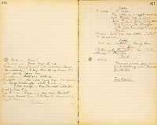

SCENE 1
Marley's Hill. (in 1) A woodland landscape. Enter Judge Tempest and Miss Tempest.--Miss T. excitedly--Judge following.Miss Tempest
Yes, I repeat it, it was all your fault. If you had stayed with us, instead of leaving us unprotected, to be picked up by any passing stranger, this wouldn't have happened.
Judge Tempest
(expostulating) But if you will tell me what possible connection there is between my leaving you alone, and Mr. York being arrested for murder?
Miss Tempest
(hurriedly) There, don't talk--you're always talking instead of acting! Oh, if I were only a man. I'd--there--there, father, forgive me, (embracing him) but you see, dear, your habits as a lawyer--
Judge Tempest
(interrupting) True! but my habits as a lawyer have not blunted my perception as a father--Shirley, my child, hear me! You love this man! (putting his arm around her.) There! I do not blame you. Indeed, 24 hours ago, I would have rejoiced at this--But my experience of life teaches me that your lover--
Miss Tempest
But he isn't my lover--it's Miss Plunkett that he loves--
Well, the lover of Miss Plunkett alias Miss Tempest, I grieve to say is in a dangerous strait. The evidence that might be frivolous and insufficient, before a competent court, will be convincing to the rude law of this locality.
Miss Tempest
But father, you can--you will save him!
Judge Tempest
(gravely) My child,--your vigilance committee knows that it must justify its irregularities by its final verdict. It has to hang a man to show that it had the right to simply arrest him.
Miss Tempest
You terrify me, father.
Judge Tempest
Be assured, my poor child, I will do all I can. I will go to the poor fellow now. They will admit me--though they deny all others. Have you any word of comfort to send him?
Miss Tempest
(impetuously) To send him? No--I'll carry it myself.
Judge Tempest
Why, my child, it's no place for you. You will not go there!
Miss Tempest
Will I grieve at home? Father you know me better.
Judge Tempest
Let me persuade you. Think of that mob of rough men.
I don't care for them, I will go.
Judge Tempest
Child, what good can you do there? Your sex never reason.
Miss Tempest
When those we love are in danger? No--thank Heaven we act first and reason afterwards.
Judge Tempest
(aside) Confound it, I'm getting the worst of it. (aloud) They will not allow women there. They will not admit you.
Miss Tempest
They shall admit me.
Judge Tempest
Oh, folly, folly! But my child, these are wild, rough miners--
Miss Tempest
They are men. And all men have hearts. (X.L.)
Judge Tempest
(perplexed for a moment--then kindly) Shirley, I do sincerely feel for you; and if you could do the least good, I would yield. But you cannot. It is no place for a young girl. My arguments have all failed--now I must use compulsion. You cannot go.
Miss Tempest
(with gentleness but firmly) Father, try to forgive me, but I will go.
Judge Tempest
(surprised) Shirley, it is the first time you ever refused me obedience. It does not
Miss Tempest
All my life, till this day, I was a girl, and a subject. To-day, I am a woman! (X.R.)
Judge Tempest
Then nothing can change your mind?
Miss Tempest
(calmly) Nothing, father.
Judge Tempest
It will grieve me--but you compel me to do it. I will oppose your entrance myself and I will take you home. You know me, my child.
Miss Tempest
(appealingly) Oh, father, father!
Judge Tempest
(embracing her) I must be cruel to be kind. Time is precious. I must go to him. My darling. (kissing her forehead) You harbor no resentment against your father?
Miss Tempest
Oh, you know I do not--could not.
Judge Tempest
There spoke my child! And you will obey?
Miss Tempest
(gently and firmly) No, this once I will not obey.
Judge Tempest
(going--aside) There spoke my own child again! But I mustn't seem to have heard it. (aloud) Keep up your heart, my child--wait at home 'till I bring you news. (exits)
Oh, there'll be no turning my father from his purpose, and that murderous pack will sacrifice the man whose life is dearer to me now, than my own, and I shall not be near to--But I will be there! Oh! What shall I do? What can I do? (exits R.)
SCENE 2
County store. Bar C. Door of entrance L.H. Barrels--boxes etc.--Window back.
Scene opens on court.
Two jurymen are playing cards and several others looking on with interest.
1st Juryman
I go 10 cents blind.
2nd Juryman
I see your blind and straddle it.
Masters
Gentlemen of the jury, the evidence being all in now, let the prisoner be brought into court and we will proceed to listen to the arguments of counsel.
Tremendous row outside--Boston jumps to door--shouts--"Dog fight!" "Dog fight!"Boston
(running to door) Dog fight! Dog fight! Hands off--fair play--let 'em alone! (to Masters) Five to one on the yaller pup!
Masters
Take it. This court stands adjourned for 10 minutes. (Jumps down from counter.)
The whole crowd, except Brod., pile out with a yell.--Jurymen snatch up their cards and pocket them as they run out.Broderick
Enter Broderick.
(aside at bar.) In a moment the jury will return
Enter the whole crowd, excited and puffing--Prisoner comes, too--Those jurymen resume their cards.Masters
(to Boston) You won the bet fair enough, but the fight wasn't fair, on account of the yellow pup taking leg-holts. I'll pay you the amount to-morrow. (Boston nods, as much as to say "All right.") The court will now proceed to--
Boston
(L. as foreman of the jury.) Just a moment, Judge. There's a little dispute here. I went 10 cents blind, and Jake Miller saw it with a 20, and then I straddled his blind, and it took him 40 cents to make it good; and by George, now he says it takes me 80 to come in.
1st Miner
(left) Oh, that be hanged! Where'd you get your education, Jake Miller? The idea of its costing him 80 to come in on his own straddle.
Masters
(C. gravely) Mr. Miller, I am surprised that any man in a land where education is as free as the air we breathe, should be so sunk in ignorance. A man straddles your blind, and you in the broad light of the 19th Century--
1st Miner
That's it!--Now there's sense in that.
Masters
A man that can't play poker is not fit to sit on a jury.
1st Miner
Of course not.
Masters
Gentlemen of the jury, the evidence is all in. (Broderick hands Masters a flask--he drinks and Brod. sends it to jury.) Thanks.
Judge Tempest
(rising R.) Your honor, I must protest, once more, against these irregularities. To pass a flask of liquor around--
Masters
Sit down, you're out of order.
Boston
Second the motion. Sit down, it ain't your turn.
Enter Ah Sin, who is prodded and pestered by people as he goes along.MastersHe protests with head shakes and a few Chinese words--stoops or squats down where somebody will stand on his tail and tip wink to other spectators.--A slight pause while Ah Sin enters.
(C.) Dry up the whole lot o'ye--Mr. Ferguson, if you're ready--go on. (Ferguson rises)
1st Miner
Now Fergy, toot your horn if you don't sell a clam.
Boston
(L. corner) Turn on your gas, Fergy.
Ferguson
(L. of table C.) Your honor--
Masters
Hold on just a minute, Mr. Ferguson--Which are you for? Prosecution or defence?
Ferguson
Well, I don't exactly know. I'm not familiar with law terms. But, I'm going to put a blast under York, if I can.
Boston and 1st Miner
Bully for you--that's the talk.
Ah Sin's tail gets fast in something or somebody is unconsciously standing on it. Tries to straighten up and can't--jabbers frantically in Chinese.Masters
Stand off the Pagan's tail! Now you
Ferguson
Gentlemen of the jury. You've seen yourselves that there is evidence enough to hang 40 men. There had been a fight--the ground torn up and the blood spots showed that; who fought that fight? York's pistol was found there with two charges shot off. Who generally carries Mr. York's pistol for him?
1st Miner
Good!
Ferguson
A handkerchief was found there, too. A clean one!--Whom does that suggest?
1st Miner
Good again!
Ferguson
I ask you to examine it. (it is passed to jury, who examine it with disgust--Brod. whispers to Ferg. and pushes the dilapidated gloves before him.) And a pair of unknown gloves found not 50 yards from the same place. (exhibits them and passes them to jury) Kid gloves, you know this swell was always insulting the camp in every way he could think of, particularly by wearing kid gloves.
Boston
That's so every time.
Ferguson
There's another thing that looks mighty
Boston
You bet--It's a blame sight, too thin.
Judge Tempest
Your honor, I must protest against these extraordinary expressions of opinion by jurymen.
Masters
(a trifle severely) Look here, my friend, who's trying this case if it ain't the jury?
Judge Tempest
But these premature expressions of opinion are totally at variance with all custom and precedent.
Masters
Never mind--you sit down. I reckon we've tried this sort of case before often enough to know how to do it. If this man ain't guilty I never saw a man that was, and if a juryman can't speak his mind, where's your boasted freedom of speech your Declaration of Independence brags about?
1st Miner
Good! Had him there!
Brod. sends box of cigars to Masters and jury.Masters
Go on, Mr. Ferguson.
Ferguson
5 or 10 words more is all I want to say. Gentlemen of the jury, look at
Judge Tempest
(rising impetuously) Come, come, this is not in evidence! Why, the very fact that nobody saw the act done is proof that nobody knows who did it.
Ferguson
(very calm, sarcastic manner) Look here, who's making this speech, I would like to know? (to jury) As I was saying, when interrupted by this old blackleg, he shoots the old man dead--jumps the claim and has the effrontery to come calmly before this camp and say he bought the mine; and the heartlessness to come with new kid gloves and a new stove pipe hat on, too--mark that--purchased with the proceeds of his crime. (audience show rising excitement.) There was a time when the man that dared to flaunt the contemptuous effronteries of kid gloves and a stove pipe hat in the face of this camp, did it at the peril of tar and feathers, a ride upon the rail, and banishment!
The spectators surge forward, the jury stand up--chorus of shouts.Masters
Omnes
(L) Hang him! Kill him! Shoot him like a dog! A rope, a rope, fetch a rope!
Grand struggle and pow-wowMasters
(springs up to level a huge revolver) Back, every devil of you! I'll kill the first man that lays a hand on him! (they fall back muttering and shaking their heads--Masters stands glaring on the crowd a while, then says with strong and pathetic indignation) Confound it, have I got to kill a man every time I sit on a case of this kind? (sits gravely down.) Let the defence begin. (Ah Sin in his fright has climbed to the top of the conspicuous pile of boxes, starts to come carefully down and tumbles with a crash.--startled.) What the nation did you get up there for!
Ah Sin
Me wantee see better.
Masters
Well, what did you come clattering down like that for?
Ah Sin
Me no got time be all day comin' down.
Brod. whispers to Ferg., who springs up.Ferguson
Hold on! Just a single word more! This prisoner has had a couple of women masquerading at this house for a day or two, passing themselvesoff for Plunkett's widow and daughter. It has been found out that they are nothing of the kind. It's a suspicious business. What do you reckon is York's little game? Did he want that bogus widow to make him a deed to Plunkett's mine, hey? (sensation) And who are these imposters?--The wife and daughter of no less a personage than--that gentleman there! (pointing to Tempest)
SensationJudge Tempest
(to some friend near) Oh, what a fatal fool I have been! Now, I would give the world if my daughter were here to throttle this calumny! (Miss T. enters through door in R. flat impetuously through the crowd--hat in hand, shawl half off--very pale.) Shirley, my child! (she runs to him.
What means this? What is your name?
Miss Tempest
Shirley Tempest.
Ah Sin
Mellican lady goin' to heap lie some more! No can keep same name two day.
Masters
Were you known by that name in the household of Mr. York?
Miss Tempest
No.
By what name then?
Miss Tempest
Miss Plunkett.
Masters
What object had you in assuming that name?
Miss Tempest
(hesitatingly) Only--a--foolish girl's fancy. My father had brought us to meet Mr. York--his old friend. The letter informing him of our arrival did not reach him. But Mr. York, seeking Miss Plunkett, who was due the same day, mistook me for that lady--I--I--did not undeceive him.
York
(rising) May it please this court.
Masters
Sit down, sir. (York sits down protesting) -- (to Miss T.) But what was your object, if you were the legitimate guest of Mr. York, in deceiving him in this way?
Miss Tempest
(greatly agitated) Oh, sir, I assure you, it was only a mere fancy--a foolish, girlish freak (sobbing) He thought my photograph was Miss Plunkett's.
Boston
Oh, let up! Oh, give her a show!
Ah Sin
Givee her showee!
Masters
(gravely) Miss Tempest, consider one moment; upon your next utterance may
Miss Tempest
(looking wildly round the court.) Because, because--because--I was-- (meeting York's eye) Oh, spare me, sir, spare him. I implore you.
Masters
(gravely) Answer. Remember, his life may hang upon your next sentence.
Miss Tempest
Because--I--loved him! (drops her head in her hands.)
Sensation. Applause from jury and spectators--Broderick turns away in anger.)Boston
Say that again, Miss, to me, and say it as you said it then, and I'll take his place under the gallows.
Judge Tempest
(rising) Again, I must protest against these constant intermeddlings of the jury in--
Boston
Sit down, you old ass--that girl of yours has said more in one minute than you have in 60.
Ah Sin, who is standing with back against wall, slaps thighMastersand is in the midst of a prodigious laugh when he observes that there is a stillness and all eyes are on him--slowly closes his wide mouth in shame.
Silence in the court!
Silence, in which Judge T. embraces Miss T. and she whispers to him.Judge Tempest
(rising) May it please the court, may I have the privilege of examining this witness?
Omnes
Go on. Heave ahead, old man!
Masters
Go on.
Judge Tempest
Swear the witness!
Boston
Swear a lady! Doubt a lady's word. Nonsense, go on! go on!
Omnes
Yes, go on--go on.
Judge Tempest
(stupefied and shrugging his shoulders) Well, I protest--but--
Broderick
This is all very fine--very pretty--a put up job between the father and daughter to humbug the jury!
Boston
Oh, take a walk. (Broderick sits down.)
Takee walkee top side hillee.
Judge Tempest
(to Miss T.) By whose suggestion did you come here?
Miss Tempest
Nobody's but my own. You refused me permission to come. And--and Mr. Broderick said I should not enter this courtroom, and he would see to it that I was prevented.
Broderick
(aside) Fool that I am! It serves me right.
Omnes
Broderick's a dog! Kick him out! Lynch him!
Judge Tempest
Mr. Broderick must answer to me for his officiousness. (to Miss T.) How did you come to hold converse with Mr. Broderick?
Miss Tempest
I met him on the road, and in my distress I implored him to use his influence to save Mr. York. And he--he--
Boston
Speak out, Miss--don't you be afraid--What did he do?
Miss Tempest
He--he--insulted me with protestations of love! Said if I would discard Mr. York for him, he would see that York was set free. (breaks down and cries a little.)
You scorned him--of course--then he--
Miss Tempest
He said he would make my assumed name tell against the prisoner.
Judge Tempest
The whole conduct of the prosecution is of a piece with this. I will not shame your intelligence, your manhood, your magnanimity by defending a man who is so manifestly guiltless, or by attacking a prosecution which has so ignominiously failed.
1st Juryman
That's me.--shake!
2d. Juryman
And me too. She hasn't been treated right.
3rd Juryman
Count me in.
Ah Sin
Alle same me!
They all get to shaking hands. Ah Sin offers to shake with somebody--is spurned contemptuously. Brod. whispers to Ferg., who springs up.Ferguson
One word, Gentlemen of the jury. Let us acquit him.
Omnes
Agreed! Agreed! Hurray!
Ferguson
Yes, let us acquit him--let us weep on his neck and welcome him back to our firesides--where he is so fond of coming to enjoy our society. So very fond of it. Let's buy 3 or 4
1st Juryman
Blamed if I vote not guilty!
Omnes
Nor I! Nor I!
Ferguson
Let's give him back the mine he stole from a poor afflicted widow and a stricken daughter who had never done him any harm! Let's forget--if any of us noticed it--that when the whiskey was passed to him from the jury a while ago, he turned from it with the native air of a snob, because--well, because he didn't feel worthy to drink after such elegant gentlemen, perhaps. (he sits down)
1st Juryman
Guilty's the word for me, boys.
2d. Juryman
That's my style! Shake!
3d. Juryman
Goodbye, Mr. York. Shake!
4th Juryman
Guilty for me, and spell it with a big J., too!
5th Juryman
A big G., you flat head.
Spectators
Hang him! hang him! hang him!
Ah Sin starts for the pile of boxes, but is taken by the ear and led back again by Broderick, who whispers to him and sends him out.Masters
Silence! The jury can retire.
Boston
'Tain't no use. The game's made. This jury's unanimous for guilty. (sensation. Miss T. is about to rush forward to York, when her father restrains her.)
Judge Tempest
(to Masters) It cannot be that this unparalleled outrage in the name of justice will be allowed to stand.
Masters
You had ample opportunity to prove the innocence of your client.
Judge Tempest
(indignantly) It is for you to prove him guilty. You have failed by every rule of law and evidence. (turning and appealing to spectators, who, meantime showing signs of dissent with the verdict, have gathered round him and his daughter) Hear me, gentlemen, I conjure you who have called this tribunal into existence, and without whose support it cannot continue to exist not to let this verdict stand which is an insult to this defenceless girl.
A Juryman
Boys, there's something in that.
Yes, blamed if there ain't.
Judge Tempest
You have wives, you have sisters, you have sweethearts--You will not see this verdict recorded against this innocent man. (pointing to York.)
All
No, we won't.
Judge Tempest
I boldly invite a verdict.
Sensation among jury--favorable to prisoner during which Broderick starts up and goes down stage.Broderick
(aside) No use holding back any longer. I must risk the Chinaman's evidence--or these fools will give in. (aloud) One moment, your honor, I have another witness.
Masters
Who is it?
Broderick
Ah Sin.
Masters
A Chinaman cannot testify in this court.
Broderick
No, but he brings a witness more powerful than himself.
Masters
The mischief he does! Very well, then, let him come forward.
Enter Ah Sin--with bag and umbrella.Ah Sin
Good day John. Good day evellyboddy--
Masters
None of your jabbering--get up there.
Ah Sin
Top side? (comic business--getting on box)
Masters
Yes, topside.
Broderick
Now Ah Sin, show the Court what you found in the bushes near Plunkett's claim the night he disappeared.
Ah Sin opens bag, fumbles about, jabbering Chinese or singing--slowly takes out jacket and hands it to Brod., who hands it to Masters.Broderick
There's the witness!--the jacket worn by York on the night of the murder, stained with the blood of his victim.
Deed falls from jacket on table as Masters examines jacket. Ferg. reaches for it--Masters plants his foot on it.Masters
Why Broderick, this is not York's jacket but yours, and here's your name on the collar.
York
Villain!
Broderick
(glaring at Ah Sin.) Ah Sin! It's false. It's some trick.
Ah Sin
(pointing pistol at Brod.) You likee him, eh?
And here's the deed which has just fallen from the pocket of your jacket.
Ah Sin
Him belongee me. I findee him in York jackee.
Masters
(pointing to Brod.) Don't let him escape!
All gather round Masters examining deed.Broderick
Devil take the Chinaman, he has put the rope around my neck.
Ah Sin
How muchee you give suppose Shellif no hangee you.
Broderick
All--everything I've got in the world.
Ah Sin
You givee half rich mine.
Broderick
Yes, and you $10,000 to boot.
Exit Ah Sin hurriedly--Excited dumb show of fury among jury and spectators has been going on while Ah Sin and Brod. were talking--upon Ah Sin's exit the row breaks out furiously. They surge forward and around Brod. and lay hands on him, drag him towards front.Voices
Hang him! Hang him like a dog!
Broderick
Have mercy! Have mercy!

A rope! A rope!
(The rope is brought and one end thrown over a hook--and three or four drag Brod. towards it--he struggles with all his might, crying.)Broderick
Mercy! Give me one little instant to prepare!
Voices
Not an instant! Hang him!
Ah Sin
(enters with Plunkett) Hi! 'Nother witness! Plunkee!
Broderick
Alive?
Plunkett
Ya'as boys, it's me.
Boston
(coming forward with outstretched hand--stops suddenly) I say--How do we know but what you're lying now.
Omnes
That's so--That's so.
Plunkett
No more lying, boys--I've reformed. As George Washington said to me-- (all laugh--Mrs. Plunkett enters followed by Miss P.)
Mrs. Plunkett
There's my poor dear Plunkett. (she runs toward him--he tries to shrink out of sight &c.)
General shout from miners, hand shaking and "Hurrah for Ah Sin."